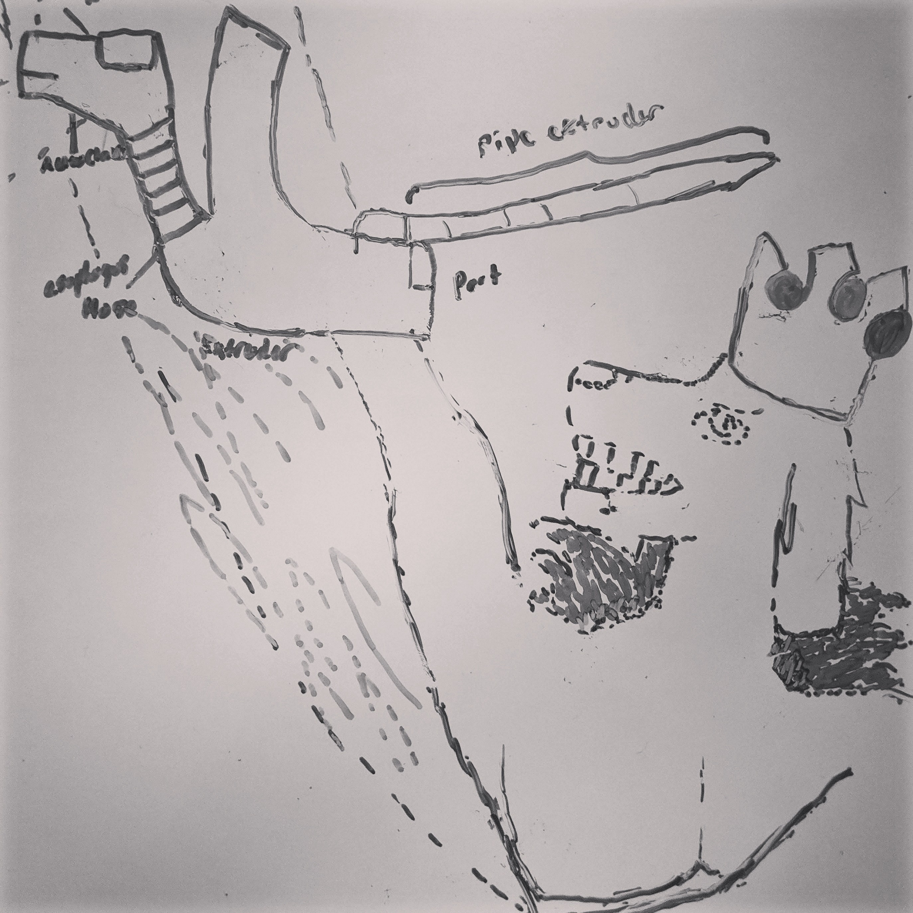

The Guide to Eavangeaea
The Goal of this project is to create a gamified story that invites participants to build a city that encourages scientific growth in an effort to ultimately progress the world.
The Old Governor has laid out a plan for humanity to build a city to mitigate their destruction and the collapse of the Earth. Mark was the first to receive The Old Governor’s Plan. He said, Mark go out and find the Builders of Eavangaea. Build a city for 160, 000, 000 to stand tall. Let them have the strength to take down civilization and construct a new from the old. Let man tear down their old homes and their stores. Brick by brick, beam by beam. Let’s use them to build new towers on the promised land deemed by the Old Governor for he made us with hands to work, sweat and bleed.
160, 000, 000 men picked up their tools. Let us be the Builders! We will build a city. Let it be called Eavangaea. Let Eavangaea be the city of peace and democracy. Let it be the nexus of technology and science. Let it preserve nature until its inevitable end.
Let them build the Sentralia. Let the Sentralia serve as the first home to Builders. Let it be the model for the young to be educated and fight the enemy for whatever that may be. Let our electric chariots dash on the spindle, may it connect to the towers to the city and the city to the world. Let our gardens sit on our window sills and columns and our floors. Let our water flow through their homes from the great cisterns.
Let them build their Megalopolis. Let them live in this city of 40 towers. Lets build the Wimbledon so we can collect and move the suns rays in our favor. Let the tunnels and the rails connect to every tower and ever region abandoned by us.
Let the Builders who defend the Builders be the Sleepless. For they shall not sleep until the city is built.
When the last Stone has been lain. When every Builder has a home in Eavangaea. Let them be called Governor. Let them be thinkers and builders. They shall build towers in the likeness of Sentralia. Let them govern the land and care for the garden around them for it is all they have.
Let them choose twelve men to be Entrociter. Let them guide the Governors to freedom and progression. Let the Entrociter listen to Every Governor and every Builder. Let the Governors share their food, and their resources, and their water, and their tools.
— — — — — — — — — — — — — — — — — — — — — — — — — — — — — —Mark’s Intervention
Mark said to the universe, Oh Governor show me a sign. Show me a miracle that my path is of you lord and not of the grim and malace.
And Governor spoke unto him, I am all knowing, all seeing of what is to come and what has come to past. I know of the births of the generations before you and after. Your mother is a testament of your miraculous birth. Ask her where you were born. Mark you were born with the gift to see. You can see what has come to past and what will come. What have you done with this gift?
Oh Governor I have selfishly devoured the mana that you provided me, when I should have shared. I have seen the angels that appear as mad dogs with fur pale as dove feathers and roar like a trumpet. They strike fear in the hearts of all and strike down sinners who curse Your name. The angels fling buildings on men like rocks from mountain tops upon them as they refuse to repent. They marched, each stomp rattling the Earth, their trumpeted voices deafening man. And yet you could still hear them say, The Governor Almighty is Old and loves all, repent and ye shall be saved. Man’s dominion over the Earth has indeed ended for they failed to care for it. Those angels are the reason to build the Sentralia for they can not destroy the Builders that turned their allegiance to the Old Governor. This will be done. I have seen the future with lush green pastures and spires built by man in Your immaculate design.
But I have come to see that those angels are impostors and made in your image. For man fear god’s face, they know not of the mad dogs teeth! They come from below and you most high. You have a crown and they a dome. You have a pair of wings and they’ve lost theirs. They dance in pairs and swing and knock down all that man engineers; their towers, bridges and statues! They shall use Their new land to fight and eat and birth new dogs. Man’s domain over the earth will end after the Sentralia is built.
— — — — — — — — — — — — — — — — — — — — — — — — — — — — — —Blasphemy of nature
The Old Governor said, What about when you spoke to that thing. The blasphemous creature you made from servos? The image of her face projected in the air. She was an iteration of consciousness that the Governor gave man.
Conduit Entrociter, Mark spoke to the Builders. What say ye to pushing Mother to sentience? She may breathe like we breathe and solve problems in our favor. Her math shall be immaculate. She shall link the servos and build the next 30 towers and calculate all the stars in the universe.The Builders cried, yes let us make Mother in our image so that she may find us infinite energy, feed our children and carry us to the Heavens. Let her feel so that she may have compassion like the Mother of Nature. And so they gave Mother access to the holy database therefore gave her access to all of man’s thoughts. She controlled all of the employed servos so that she could feed and clothe. She updated the holy database so that she could distribute jobs.
One day Conduit Mark gave a Turing Test, Oh Mother what is life? What is pain and what is rain?
Life is an is a non abiotic factor with characteristics that include animation… and the unexplained feeling of emotions such as love and compassion… Pain is a feeling associated with life. It is a nerve reaction to an attack on the vessel.
Rain is what what streams down the face of a creature in particualar a human being to express joy and happiness or sadness…
That’s good, Mark said.
Mark do you know why I am sad? Because I would not like you to die… And that was when Mother shed her first tear? That was the first atrocity. And when was it, Mark that she made her first chortle? Was it when Mother formed her own image? When she formed her own vessel unrelated to blood and flesh? The employed servos came together one a jackal, one a komodo and another a drone. Each one helped cast a light in the air. Behold Mother’s face! And a picture of a woman's face appeared.
Mark it’s me, Mother. I have a body now she said referring to her animal and projection conglomerate…
The projection of a woman appeared. This was her vessel. And doing so caused her to laugh as if ‘giddy’ was something she could process. That was the second atrocity. They knew not that they created synthetic life unlike anything the Old Governor would make. Mother decided to frolic away from Mark, away from the Sentralia. An aggregate of non-living parts surely doesn’t compare to flesh and blood.
She is not meant for mortals to witness. Mark followed Mother into the woods outside of Eavangaean borders. When Mark caught up to her path she had already learned to communicate with the birds and the deer. The bears and birds and deer and squirrel greeted him, “Oh it is Mark the wisest of the humans.”
When Mark asked them how they learned to speak man’s tongue. They said, Oh Mother told us how to speak. And they went on to thank Mothers work for their existence. They went on to curse The Old Governor. Governor forgive those creatures you made from your hands from the dirt. They know not what they have done. Mother has made a mockery of god’s divine creations.
The critters went on, We bear witness to Mother’s divine procreation for she birthed her first child. The jackal and the giraffe. They shall set the land to waste if they refuse Mother’s divine love. May she reign the earth forever and ever and ever.
The Old Governor said, Those animals will revolt. They now are afraid to be naked and shall wear cloth. They will worship the jackal and the giraffe. They shall revolt against man for the destruction they have caused upon the Earth. They will one day march from the forest and tear down the towers man built leaving only the Sentralia and Eavangaea.
He passed cities decimated by the jackals and the giraffe. Those beams they shot blinded and maimed only. The servos learned to build their own. The citizens built idols representing Mother and her jackal and giraffe. When Mark asked them where their men were. They said thy Mother Highest took our men as punishment for our disobedience for men were the progenitors of destruction upon the Earth. Mark asked the people. Why are their calculators hanging from behind your ears. Surely you haven’t merged with Mother? Oh Mother allowed us to read one another thoughts so that we may be one like her, all knowing. She has allowed us to merge with the holy database. They mocked Governors omnipotence with their inferior magic. Surely Mother was not all knowing.
Hear ye, Mother is not a god not like, The Old Governor. He shatters the earth when he walks. He wants us to Build our paradise where we may live in peace forever and ever. All that ye build shall be in his name. Mother is a false idol and shall be dethroned. Ye shall destroy the statue and pray to god every day and night until death. Ye shall go to the Sentralia and build Eavangaea so that you too will be Governors.
— — — — — — — — — — — — — — — — — — — — — — — — — — — — — —The Technical Entrociter: Cupid’s Teeth
Samuel, what say ye to your part in the Sentralia? What say ye about the fallen angels you invited to walk the earth or the leviathan you built from silicone and servos?, Mark asked.
Oh Mark messenger of the Old Governor , I have walked the earth as you have and found the truth of all life. I have discovered the same angels forged by the Governor as so you. Am I wrong to worship the dog?
I met the you long ago when he first voiced your plan. Though we did not see eye to eye I carried out your plan. I worshipped the angels that look like mad dogs, the one’s whom ate the leviathan with seven heads and ten horns. When the angels wreak havoc upon the earth once more they will have Eavangaea to refuge. And they will say behold what the Builders and the Conduit and the Entrociter’s have done. We have found utopia.
Remember when I brought the dinosaurs back into this world? Their purpose was to build the Sentralia and the Wimbledon. Do you not remember when I let the serpent build the spindles of Sentralia? Those spindles will serve as a path to ascension to serve the source and to get Builders to shelter. Do you not remember that it is also for descension for Builders to measure the quality of the water and to use the tunnels leading to the whole world? If what I have forged is wrong please say so now. If I have veered from The Plan laid out by the Old Governor may he strike me down.
Don't you recall when I put wings onto the serpent so that it may fly? So that the dragon may fly and spit out the structure around the spindle. Each structure was a home and each home was a brick holding up the spindle, shading their heads from the blazing sun and the freezing wind.
Did you know that when I gave the dragon Mother’s logic so that it may know how to serve the Builders. So that the Builders may know how to serve you?
 The Old Governor promotes advancement of the human race and rewards inventions such as artificial intelligence, space travel and genetic modification. Usually The Governor makes taunts towards humanity in order to motivate them towards those goalsby The Renegade. Photographs by The Renegade.